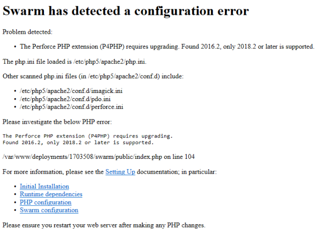

Moving your Swarm instance
This section describes how to move your Swarm instance to another server. This can be useful if you want to move Swarm to a different server to improve performance or if you want to run Swarm on a newer operating system. Swarm data is held on the Helix Core server and not in Swarm so there is no need to migrate any data to your new Swarm instance.
If you are installing a newer version of Swarm than your original Swarm instance, you might need to configure options if they are not already present in you original version of Swarm.
For example, Swarm workflow, updated trigger scripts, the introduction of Extensions, the introduction of a Redis cache, and changes to custom modules. For information on important changes to Swarm, see the Important information section of the Swarm What’s new page.
Summary
Moving your Swarm installation to a new server results in downtime, but the following process minimizes it. The process for moving your Swarm installation to another server is summarized below:
-
Install Swarm on a new server.
-
Copy your original Swarm config.php file and authentication token to your new Swarm instance.
-
Only required if you are moving to a newer version of Swarm: Configure your new Swarm instance to receive event notifications from the Helix server.
-
Shutdown your original Swarm instance and start your new Swarm instance .
-
Validate that your new Swarm instance is working correctly.
Downtime occurs at this step.
For step by step instructions for moving your Swarm instance, start by Installing Swarm on your new server.
Installing Swarm on your new server
Choose one of the following installation methods (we recommend the package installation method whenever possible):
-
Install and configure Swarm from a package (recommended). Do not follow the Post-installation configuration steps. Copy your original Swarm config.php file to your new Swarm instance, see Copying your existing Swarm configuration.
-
Deploy and configure a Swarm VM from an OVA. Set the perforce system user password, the VM hostname, and exit the Swarm VM configuration when prompted. Copy your original Swarm config.php file to your new Swarm instance, see Copying your existing Swarm configuration.
-
Install and configure Swarm manually from a Tarball, configure Redis, configure Apache, and configure PHP. Copy your original Swarm config.php file to your new Swarm instance, see Copying your existing Swarm configuration.
Copying your existing Swarm configuration
-
Copy your original SWARM_ROOT/data/config.php file to your new Swarm instance.
-
Create the queue token directory on your new Swarm instance:
mkdir SWARM_ROOT/data/queue
-
Copy your original trigger token(s) from the SWARM_ROOT/data/queue/tokens to your new Swarm instance.
-
Assign correct ownership to the new Swarm instance data directory:
sudo chown -R www-data SWARM_ROOT/data
NoteThe www-data user above is an example of what the web server user name might be, and can vary based on distribution or customization. For example, the user is typically apache for Red Hat/CentOS and www-data for Debian/Ubuntu.
-
Do one of the following:
-
If moving to an instance with the same Swarm version: go to Replacing your original Swarm instance with your new instance.
-
If moving to an instance with a newer version of Swarm: go to Configuring Helix Core server event notification.
-
Configuring Helix Core server event notification
The steps in this section are only required if you are moving your Swarm instance to a newer version of Swarm. If the new and original Swarm instances are the same Swarm version, go to Replacing your original Swarm instance with your new instance.
Swarm needs to know about a number of Helix server events to operate correctly, this can be done by using Helix Core server Extensions or Helix Core server Triggers.
You must configure your new Swarm instance to receive event notifications from the Helix server to complete the Swarm move.
Do one of the following so that Swarm is notified about events on the Helix server:
-
If your old Swarm instance is using Helix Core server Extensions: update the Swarm Helix server extension configuration, see Updating your Swarm Helix server extension
-
If your old Swarm instance is using Helix Core server Triggers: update your Swarm Triggers, see Updating your triggers
Updating your Swarm Helix server extension
You must be a user with super user permissions to configure Helix server Extensions.
If you are moving a Swarm instance that is already using Helix server Extensions, there is no need to reinstall the extension because it is already installed on Helix server.
To update your Swarm Helix server extension:
-
Open the extension configuration file with:
-
Edit the configuration for your new Swarm instance as required.
-
Swarm-URL: do one of the following:
-
If the hostname of your Swarm server has changed: set the Swarm-URL to the URL of your new Swarm server instance.
-
If the Swarm server hostname has not changed: you do not need to change the Swarm-URL in the configuration file.
-
-
Save the configuration changes.
-
Continue with the next task, see Replacing your original Swarm instance with your new instance.
p4 extension --configure Perforce::helix-swarm
The spec file opens in your text editor
Updating your triggers
If you are using Swarm Helix server Triggers, the Swarm Helix server extension must not be installed.
-
Copy the new Swarm trigger script to your Helix Core server machine. The trigger script is
SWARM_ROOT/p4-bin/scripts/swarm-trigger.pl, and requires installation of Perl 5.08+ (use the latest available) on the Helix server machine. If Swarm is using SSL, then the triggers also require theIO::Socket::SSLPerl module.WarningDo not overwrite any existing trigger script at this time. Give the script a new name, for example:
swarm-trigger-new.pl. -
Configure the Swarm trigger script by creating, in the same directory on the Helix server machine,
swarm-trigger.conf. It should contain:NoteIf you already have a
swarm-trigger.conffile, no additional configuration is required.# SWARM_HOST (required) # Hostname of your Swarm instance, with leading "http://" or "https://". SWARM_HOST="http://my-swarm-host" # SWARM_TOKEN (required) # The token used when talking to Swarm to offer some security. To obtain the # value, log in to Swarm as a super user and select 'About Swarm' to see the # token value. SWARM_TOKEN="MY-UUID-STYLE-TOKEN" # ADMIN_USER (optional) Do not use if the Workflow feature is enabled (default) # For enforcing reviewed changes, optionally specify the normal Perforce user # with admin privileges (to read keys); if not set, will use whatever Perforce # user is set in environment. ADMIN_USER= # ADMIN_TICKET_FILE (optional) Do not use if the Workflow feature is enabled (default) # For enforcing reviewed changes, optionally specify the location of the # p4tickets file if different from the default ($HOME/.p4tickets). # Ensure this user is a member of a group with an 'unlimited' or very long # timeout; then, manually login as this user from the Perforce server machine to # set the ticket. ADMIN_TICKET_FILE= # VERIFY_SSL (optional) # If HTTPS is being used on the Swarm web server, then this controls whether # the SSL certificate is validated or not. By default this is set to 1, which # means any SSL certificates must be valid. If the web server is using a self # signed certificate, then this must be set to 0. # set the ticket. VERIFY_SSL=1
Fill in the required SWARM_HOST and SWARM_TOKEN variables with the configuration from any previous Swarm trigger script, typically
swarm-trigger.pl.TipThe ADMIN_USER and ADMIN_TICKET variables were used by the 'enforce triggers' in Swarm 2019.1 and earlier. They can be removed unless you are explicitly disabling workflow and using the deprecated 'enforce triggers'.
NoteSwarm 2015.4 and earlier: Swarm trigger script files were available as shell scripts in these earlier Swarm versions, typically
swarm-trigger.sh.Swarm must now use a Perl trigger script file, typically
swarm-trigger.pl. -
On Linux: ensure that the script is executable:
sudo chmod +x swarm-trigger-new.pl
-
Rename the new trigger script:
On Linux:
mv swarm-trigger-new.pl swarm-trigger.pl
On Windows:
ren swarm-trigger-new.pl swarm-trigger.pl
-
Update the triggers in your Helix server.
Warning-
The swarm.shelvedel shelve-delete trigger line was added to Swarm in version 2018.1 and updated in version 2020.1.
- Upgrading from Swarm 2017.4 and earlier: add the
swarm.shelvedel shelve-deletetrigger line to the Helix server trigger table if it is not already present, see Update the Helix server triggers table to run the trigger script. - Upgrading from Swarm 2018.x and 2019.x: replace the existing
swarm.shelvedel shelve-deletetrigger line in the Helix server trigger table with the one supplied in the Swarm version you are upgrading to.
- Upgrading from Swarm 2017.4 and earlier: add the
-
Workflow feature:
The Workflow feature is enabled by default in Swarm 2019.2 and later. The trigger lines required when workflow is enabled are different to those required when workflow is disabled:
- Workflow feature enabled (default):
- Comment out the swarm.enforce.1, swarm.enforce.2, swarm.strict.1, and swarm.strict.2 trigger lines in the Helix server trigger table if they are present, see Update the Helix server triggers table to run the trigger script.
- Add the
swarm.enforce change-submit,swarm.strict change-content, andswarm.shelvesub shelve-submittrigger lines to the Helix server trigger table if they are not already present, see Update the Helix server triggers table to run the trigger script.
- Workflow feature disabled:
Comment out the
swarm.enforce change-submit,swarm.strict change-content, andswarm.shelvesub shelve-submittrigger lines in the Helix server trigger table if they are present, see Update the Helix server triggers table to run the trigger script.
- Workflow feature enabled (default):
-
Run the Swarm trigger script to capture (using Ctrl+C on Windows and Linux, Command+C on Mac OSX) the trigger lines that should be included in the Perforce trigger table:
On Linux:
./swarm-trigger.pl -o
On Windows:
path/to/perl swarm-trigger.pl -o
- As a Perforce user with super privileges, update the Perforce trigger table by running
p4 triggerscommand and replacing anyswarm.*lines with the previously captured trigger line output (using Ctrl+V on Windows and Linux, Command+V on Mac OSX).
ImportantIf you previously customized the Swarm trigger lines, perhaps to apply various Trigger options, be sure to repeat those customizations within the updated trigger lines.
-
-
Continue with the next task, see Replacing your original Swarm instance with your new instance.
Replacing your original Swarm instance with your new instance
Downtime occurs in this step.
Replace your original Swarm instance with your new Swarm instance.
-
Stop your original Swarm instance:
-
Start your new Swarm instance:
-
Continue with the next task, see Validating your new Swarm instance.
sudo apache2ctl stop
sudo apache2ctl start
If you see the following error message when you start Swarm, Swarm is using the wrong version of P4PHP. The latest version of P4PHP is included with Swarm.
If you are installing Swarm from a tarball, you must configure Swarm to use that version of P4PHP. For instructions about how to configure Swarm to use the new version of P4PHP, see PHP configuration.

Validating your new Swarm instance
When Swarm starts it verifies the Redis cache, during this time you cannot log in to Swarm. The time taken to verify the Redis cache depends on the number of users, groups, and projects Swarm has. Start-up time can be improved by persisting the memory cache. You can persist the memory cache by disabling background saves and enabling append saves in the redis-server.conf file, see Redis server configuration file.
Check that your upgraded Swarm instance is working correctly by doing the following:
- Create a new changelist that:
- Contains at least one modified file
- Contains the #review keyword in the changelist description
- Right click on the new changelist in P4V and click Shelve Files...
- Check that a new Swarm review is created for the changelist.
- If a Swarm review is created, the Swarm Helix server extension is working. If you are using Swarm Helix server Triggers instead of the Swarm Helix server extension and the review is created, the triggers are working.
- If a Swarm review is not created, see Review not created.
Do not select Request New Swarm Review... because this method uses the API and will not fully test the Swarm Helix server extension.
This is also true if you are using Swarm Helix server Triggers instead of the Swarm Helix server extension.
-
Do one of the following:
-
If your new Swarm instance is working correctly: Retire your original Swarm instance.
-
If your new Swarm instance is not working correctly: Shutdown the new Swarm instance, remove any updates you made to the triggers or extensions on the Helix server, and switch back to your original Swarm instance. Check the configuration and connectivity of your new Swarm instance. If you can't find the issue, you can submit a Support Request.
-